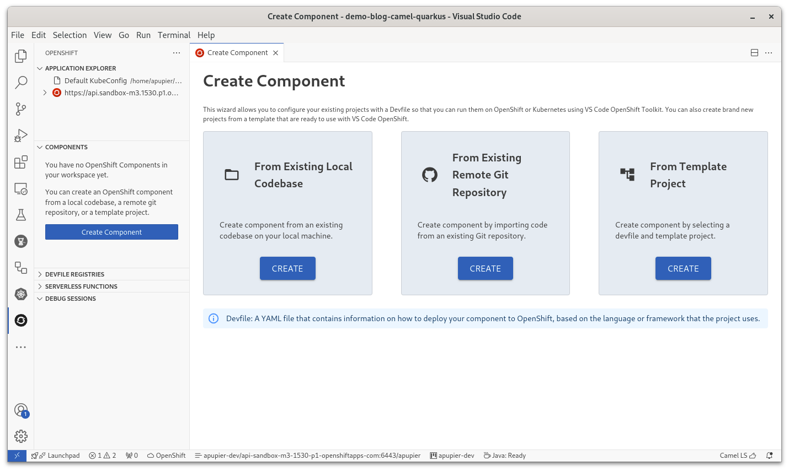

How to Camel Debug a Camel Quarkus route deployed on OpenShift from VS Code
Requirements
This how-to will not cover in details the following points, it is assumed that it is installed/preconfigured:
- VS Code with the Extension Pack for Apache Camel with a folder opened
- Active connection to an OpenShift cluster
- JBang available on Command-Line Interface (CLI)
- Maven available on CLI
Note that this tutorial was made with the following versions:
- Camel 4.7.0
- VS Code Language support for Apache Camel 1.3.0
- VS Code Debug Adapter for Apache Camel 1.2.0
- VS Code OpenShift Toolkit connector 1.15.0
Create a Camel route
- Open command palette (
Ctrl+Shift+P) - Search for the command
Camel: Create a Camel Route using Java DSL - Provide a name, for instance
MyRoute - Recommendation: close the editor as the corresponding file is duplicated in next step to be moved to correct place for the project.
Create a Quarkus project
- Open command palette (
Ctrl+Shift+P) - Search for the command
Camel: Create a Camel Quarkus project - Default parameters can be used
You can notice the Camel route in src/main/java/com/acme/myproject folder (to adapt if parameters were customized)
Pom configuration
- Open the pom.xml
- Notice that there is a
camel.debugprofile, you need to add a Jolokia enablement configuration:
<profile>
<id>camel.debug</id>
<activation>
<property>
<name>camel.debug</name>
<value>true</value>
</property>
</activation>
<dependencies>
<dependency>
<groupId>org.apache.camel.quarkus</groupId>
<artifactId>camel-quarkus-debug</artifactId>
</dependency>
</dependencies>
<build>
<plugins>
<plugin>
<groupId>org.apache.maven.plugins</groupId>
<artifactId>maven-dependency-plugin</artifactId>
<version>3.7.1</version>
<executions>
<execution>
<id>copy</id>
<phase>generate-sources</phase>
<goals>
<goal>copy</goal>
</goals>
<configuration>
<artifactItems>
<artifactItem>
<groupId>org.jolokia</groupId>
<artifactId>jolokia-agent-jvm</artifactId>
<version>2.0.3</version>
<type>jar</type>
<classifier>javaagent</classifier>
</artifactItem>
</artifactItems>
<stripVersion>true</stripVersion>
</configuration>
</execution>
</executions>
</plugin>
<plugin>
<groupId>${quarkus.platform.group-id}</groupId>
<artifactId>quarkus-maven-plugin</artifactId>
<configuration>
<jvmArgs>-Dcamel.main.shutdownTimeout=30 -Dquarkus.camel.source-location-enabled=true -javaagent:target/dependency/jolokia-agent-jvm-javaagent.jar=port=7878,host=localhost</jvmArgs>
</configuration>
</plugin>
</plugins>
</build>
</profile>
In a nutshell, the Jolokia jvm agent jar is copied in target folder. Then when quarkus-dev is used, the javaagent is configured to point to this downloaded jar.
OpenShift Component creation
- In the Activity bar (left menu), select the OpenShift activity.
- Ensure a connection is active, the
Application explorerview in the primary sidebar should list it. - In the
Componentsview of the primary sidebar, click onCreate component
- Click on
Createbutton in panelFrom Existing Local Codebase - Provide a Component name, for instance
my-camel-route - From the drop-down folder, pick the root folder of the workspace which is proposed
- Click
Next - Keep the recommended Quarkus devfile and click
Create component
Devfile configuration
- Open the
devfile.yamlfile - Activate the
camel.debugprofile and expose Jolokia port, it will give something like:
commands:
- exec:
commandLine: ./mvnw -Dmaven.repo.local=/home/user/.m2/repository compile
component: tools
workingDir: ${PROJECT_SOURCE}
id: init-compile
- exec:
commandLine: ./mvnw -Dmaven.repo.local=/home/user/.m2/repository quarkus:dev -Dquarkus.http.host=0.0.0.0
-Djava.util.logging.manager=org.jboss.logmanager.LogManager
component: tools
group:
isDefault: true
kind: run
hotReloadCapable: true
workingDir: ${PROJECT_SOURCE}
id: dev-run
- exec:
commandLine: ./mvnw -Dmaven.repo.local=/home/user/.m2/repository quarkus:dev -Dquarkus.http.host=0.0.0.0
-Djava.util.logging.manager=org.jboss.logmanager.LogManager -Ddebug=${DEBUG_PORT} -Pcamel.debug
component: tools
group:
isDefault: true
kind: debug
hotReloadCapable: true
workingDir: ${PROJECT_SOURCE}
id: dev-debug
components:
- container:
args:
- tail
- -f
- /dev/null
endpoints:
- name: port-8080-tcp
protocol: tcp
targetPort: 8080
- name: port-jolokia
protocol: http
targetPort: 7878
env:
- name: DEBUG_PORT
value: "5858"
image: registry.access.redhat.com/ubi8/openjdk-21:1.19-1
memoryLimit: 1024Mi
mountSources: true
volumeMounts:
- name: m2
path: /home/user/.m2
name: tools
- name: m2
volume:
size: 3Gi
events:
postStart:
- init-compile
metadata:
description: Java application using Quarkus and OpenJDK 21
displayName: Quarkus Java
icon: https://design.jboss.org/quarkus/logo/final/SVG/quarkus_icon_rgb_default.svg
language: Java
name: camel-quarkus-demo
projectType: Quarkus
tags:
- Java
- Quarkus
version: 1.5.0
website: https://quarkus.io
schemaVersion: 2.2.0
starterProjects:
- name: community
zip:
location: https://code.quarkus.io/d?e=io.quarkus%3Aquarkus-resteasy&e=io.quarkus%3Aquarkus-micrometer&e=io.quarkus%3Aquarkus-smallrye-health&e=io.quarkus%3Aquarkus-openshift&cn=devfile&j=21
- name: redhat-product
zip:
location: https://code.quarkus.redhat.com/d?e=io.quarkus%3Aquarkus-resteasy&e=io.quarkus%3Aquarkus-smallrye-health&e=io.quarkus%3Aquarkus-openshift&j=21
Start in dev mode
- In OpenShift activity, right-click on the component and choose
Start dev - Be patient so that the application is building on OpenShift and then started This kind of log will appear:
__
/ \__ Developing using the "camel-quarkus-demo" Devfile
\__/ \ Namespace: apupier-dev
/ \__/ odo version: v3.16.1 (817faa69f-nightly)
\__/
↪ Running on the cluster in Dev mode
✓ Web console accessible at http://localhost:20000/
✓ API Server started at http://localhost:20000/api/v1
✓ API documentation accessible at http://localhost:20000/swagger-ui/
• Waiting for Kubernetes resources ...
✓ Added storage m2 to component
===================
⚠ Pod is Pending
===================
✓ Pod is Running
✓ Syncing files into the container [2s]
✓ Executing post-start command in container (command: init-compile) [27s]
• Executing the application (command: dev-debug) ...
✓ Waiting for the application to be ready [36s]
- Forwarding from 127.0.0.1:20001 -> 8080
- Forwarding from 127.0.0.1:20002 -> 7878
Check Camel route is running
- In OpenShift activity, right-click on the component and choose
Follow logThis kind of log will appear when the route is started:
tools: 2024-08-06 12:44:16,282 INFO [MyRoute:12] (Camel (camel-1) thread #2 - timer://java) Hello Camel from route1
Configure VS Code remote debug launch configuration
- In the
odo devlog of the started component, the mapped port for Jolokia is visible. it corresponds to the 7878. In our case, it is 20002. - Open
.vscode/launch.json - Add an attach configuration through Jolokia using the mapped port found in log. it will give something like:
{
"name": "Jolokia attach",
"type": "apache.camel",
"request": "attach",
"attach_jmx_url": "service:jmx:jolokia://localhost:20002/jolokia/"
}
Attach the debugger
- Open
Run and DebugActivity (Ctrl+Shift+D) - Select
Jolokia attachin the drop-down - Click on
Runbutton
Camel debug and Enjoy
Camel debugger is operational. You can place breakpoints, inspect ad modify variables, go step by step and more.
For instance, open src/main/java/com/acme/myproject/MyRoute.java and place a breakpoint on the log line.
Enjoy!
What’s next
Some ideas of related improvements:
- Pre-configure pom for Jolokia in camel.debug profile CAMEL-20947
- Automatically configure Camel debugger and Jolokia when
quarkus:devis activated apache/camel-quarkus#3876 - Include devfile when creating Quarkus project
- Provide a Camel specific devfile in devfile registry
- Provide contextual menu to attach Camel debugger automatically in component view
- Support automatic reconnection of debugger when route is reloaded FUSETOOLS2-1624
Please provide feedback and ideas with your preferred channel: